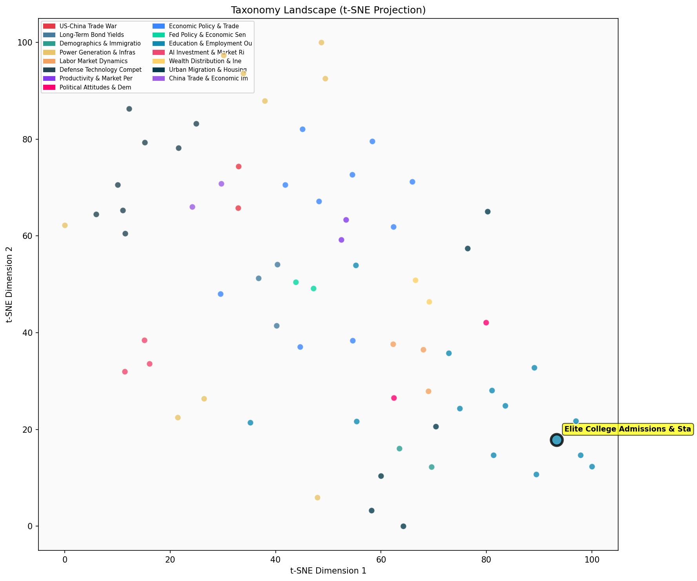

Description
This subcluster examines the economic returns and admissions processes of elite higher education institutions, with particular focus on standardized testing requirements and their predictive value. Articles typically analyze longitudinal datasets from Ivy-Plus colleges and selective universities, investigating how SAT/ACT scores correlate with academic outcomes and lifetime earnings. The research explores policy changes in test-optional admissions, differential returns by demographic groups, and the relationship between student quality metrics and institutional selectivity. Unlike sibling clusters focusing on broader educational attainment gaps or K-12 interventions, this subcluster specifically targets the intersection of elite college access, standardized assessment validity, and socioeconomic mobility through prestigious institution attendance.
Similarity to All 70 Subclusters
Each cell represents a subcluster. Color intensity shows similarity (blue=low, red=high). Black line marks current subcluster position.
Relationship to Primary Clusters
Average similarity to each of the 15 primary clusters. Larger area = stronger relationship to that cluster.
Taxonomy Landscape
All 70 subclusters positioned by similarity (t-SNE). Current subcluster highlighted with label. Click to enlarge.
Network Connections
Current subcluster at center, connected to related subclusters. Line thickness = similarity strength.
Most Representative Articles
-
1. Returns from attending highly selective colleges decline after controlling for SAT scores, except fo
-
2. .@OppInsights finds that the “Ivy-Plus” (Ivy League, plus UChicago, Duke, MIT, Stanford) admit stude
-
3. At Selective Colleges White Students Have Higher SAT Scores Than Black And Hispanics.
-
4. The SAT is often criticized as a measure of student affluence, but data suggests that parental IQ, n
-
5. A study of 781,437 college-bound Black & White students found significant disparities in SAT perform
Edge Cases (Boundary Articles)
-
1. Controlling for student quality, Altonji et al. estimate school rank has a moderate, statistically sThis article is borderline because while it mentions graduate school admissions indirectly through "school rank," its primary focus is on the economic returns and earnings outcomes of different graduate degrees rather than the admissions processes or standardized testing requirements that define the assigned cluster. The article aligns more closely with employment and wage analysis, which explains its higher similarity to the "College Graduate Employment & Wage Premiums" cluster.
-
2. The College Board periodically changes standards for AP exams to better match college performance, rThis article is borderline because while it mentions AP exams (a form of standardized testing), it focuses specifically on test standards and grade inflation rather than elite college admissions processes or economic returns from higher education. The content aligns more closely with academic performance assessment issues than with the admissions and outcomes focus of the assigned cluster.
-
3. Joining Dartmouth and MIT Yale will again require applicants to submit standardized test scores forThis article is borderline because while it directly addresses standardized testing requirements at elite institutions (core to the cluster), it focuses narrowly on a policy announcement rather than examining the economic returns or predictive value of testing that defines the cluster's analytical focus. The mention of Yale's policy change could also relate to broader admissions policy debates, making it potentially relevant to the race-based admissions cluster as well.
Original Dendrogram